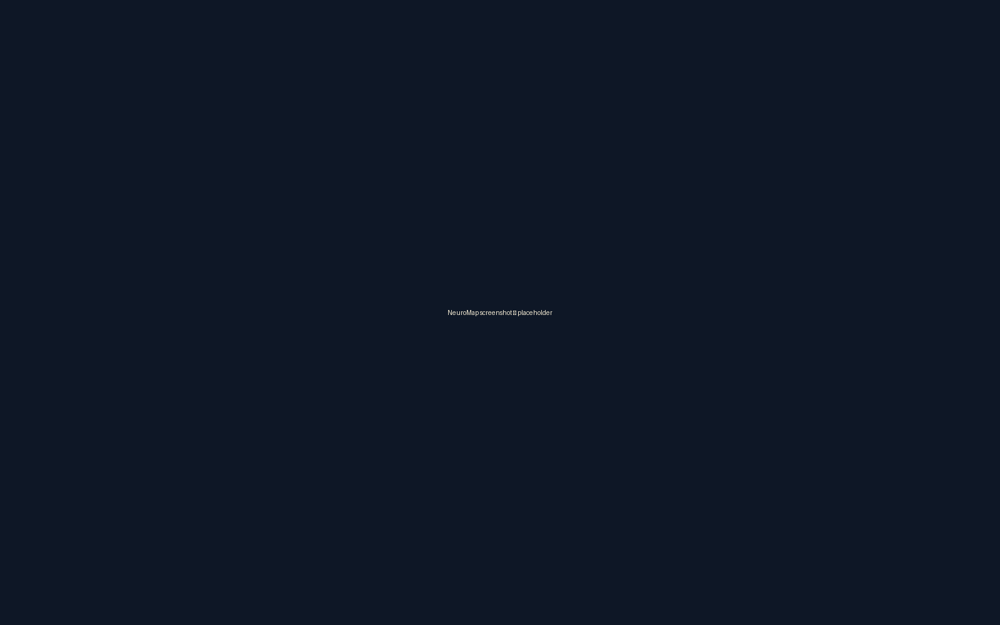

01
Static-first analysis
Eleven analyzers across TypeScript, JavaScript, Kotlin, and Java — null safety, state-before-init, async flow, complexity, circular dependencies, syntax, and compilation errors.
An IntelliJ IDEA plugin by Javier Rodríguez
Eleven deterministic analyzers. Five PSI-validated fixers. Optional local AI. Zero telemetry.
Three things, deliberately scoped. Aegis Debug runs every analysis through deterministic static analyzers first, then optionally augments with AI.
Eleven analyzers across TypeScript, JavaScript, Kotlin, and Java — null safety, state-before-init, async flow, complexity, circular dependencies, syntax, and compilation errors.
Five one-click fixers with PSI-validity guarantees: every produced edit parses or the fixer returns null and falls back to AI.
No telemetry. No cloud uploads without explicit opt-in. Optional local Ollama or cloud OpenAI for AI augmentation. API keys stored in IntelliJ PasswordSafe.

Aegis Debug runs every analysis through deterministic static analyzers first, then optionally augments with AI. Static findings are PSI-backed and type-aware — the Kotlin analyzers use the Kotlin Analysis API; the Java analyzers use PSI directly.
AI is a fallback path, only if you opt in. Every finding carries a provenance badge so engine-verified results look distinct from local-AI or cloud-AI results. The reader always knows what they're trusting.
Three different kinds of work from the V1 → V1.5 cycle: a migration, a debugging dig, and a deliberate refactor.
[ Case study 1 content lands in Task 8 ]
[ Case study 2 content lands in Task 8 ]
[ Case study 3 content lands in Task 8 ]